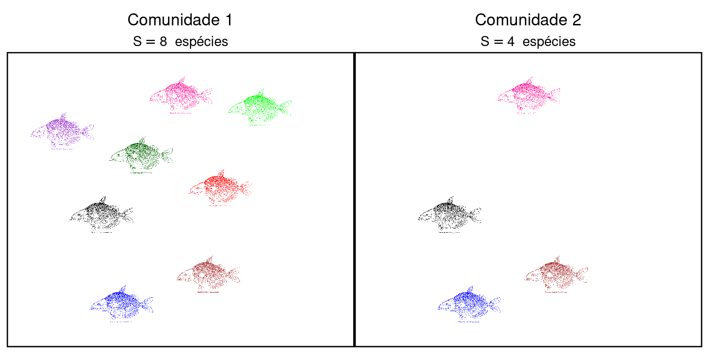
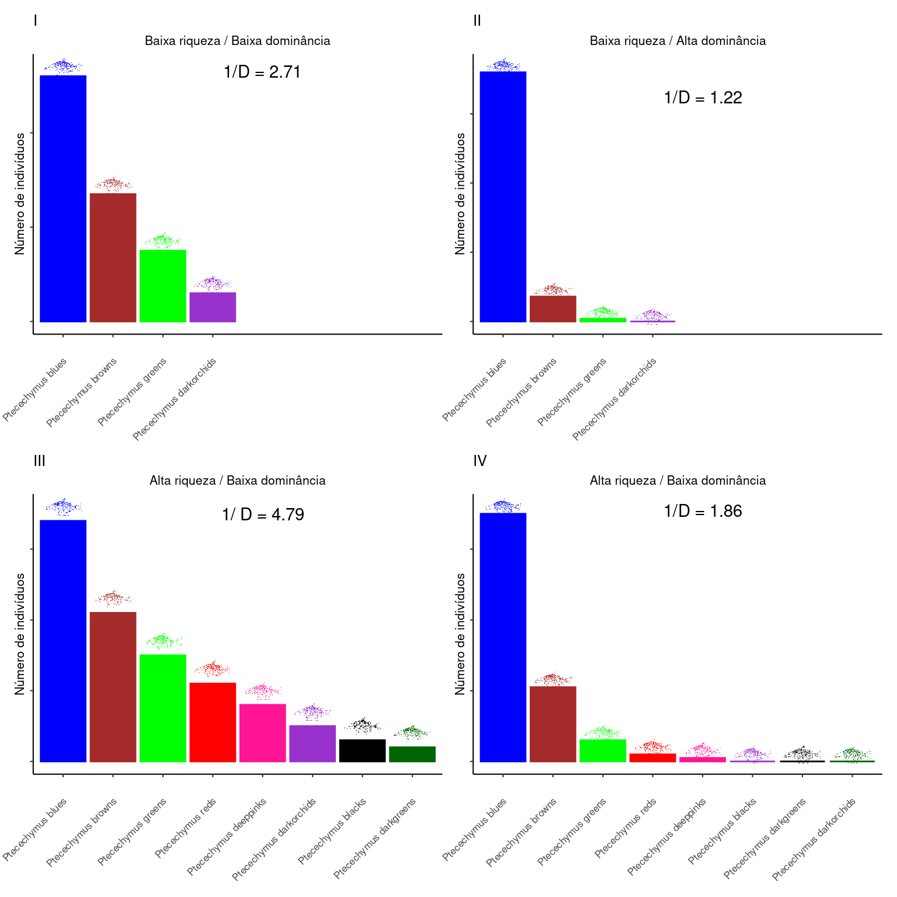
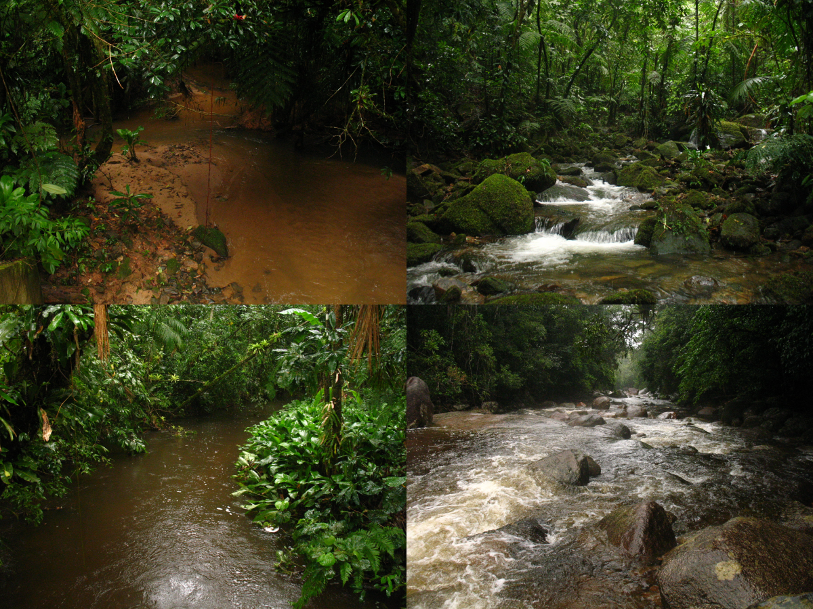
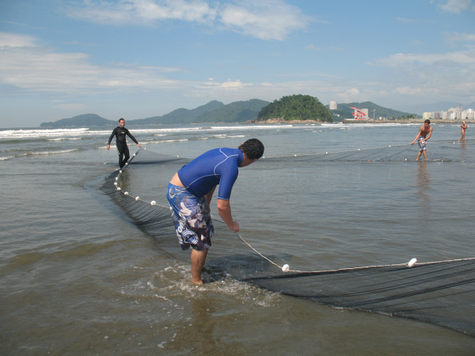

Capítulo 1 Medidas de diversidade: introdução
Geralmente entendemos por diverso, um ambiente em que existem muitas espécies. Uma floresta tropical é um ambiente mais diverso que uma floresta temperada, um trecho de mata atlântica mais diverso que um ambientre desértico. O número de espécies existentes em uma região, denominado de riqueza de espécies (S) é um componente fundamental da diversidade em comunidades ecológicas.
Considere as duas comunidades abaixo:

Se medirmos a diversidade de uma comunidade por meio da riqueza de espécies, a comunidade \(1\) (\(S = 8\)) é duas vezes mais diversa que a comunidade \(2\) (\(S = 4\)). Entretanto, outro componente fundamental do que denominamos de diversidade de espécies tem relação com o grau de uniformidade ou equabilidade das abundâncias relativas. Se duas comunidades têm a mesma riqueza, será mais diversa aquela em que as abundâncias relativas forem mais uniformes entre as espécies.
Suponha duas comunidades com \(5\) espécies e \(100\) indivíduos. Na comunidade A todas as espécies têm \(20\) indivíduos, enquanto na comunidade B, a espécie mais abundante tem \(96\) indivíduos e todas as restantes somente \(1\) indivíduo cada. A comunidade A será mais diversa pois tem uma distribuição de abundância relativa mais uniforme, enquanto a segunda comunidade é menos uniforme (menos diversa) pois apresenta elevada dominância.
Ao combinarmos estes dois componentes podemos encontrar diferentes tipos de comunidades: i - comunidades com baixa riqueza de espécies e baixa dominância, ii - comunidades com baixa riqueza de espécies e alta dominância; iii - comunidades com alta riqueza de espécies e baixa dominância ou iii - comunidades com alta riqueza de espécies e alta dominância.

1.1 Indices de diversidade
Os índices de diversidade capturam os dois componentes (riqueza de espécies e uniformidade) em uma única medida. Neste sentido, um elevado valor de diversidade pode ocorrer devido à elevada riqueza, elevada uniformidade (= baixa dominância), ou ambas.
Existe uma variedades de índices na literatura, cada um enfatizando em maior gau diferentes componentes (riqueza vs equabilidade) da diversidade de espécies. Abaixo, vamos apresentar um deles, com propriedades bem conhecidas: o Índice de Diversidade de Simpson.
Índice de Diversidade de Simpson
Simpson (1949 - Measurement of diversity) definiu uma medida de diversidade a partir da probabilidade de que dois indivíduos retirados aleatoriamente de uma comunidade fossem pertencentes à mesma espécie. Para uma comunidade com número finito de indivíduos esta probabilidade pode ser dada por:
\[D = \sum_{i = 1}^{S}\left(\frac{n_i(n_1 - 1)}{N(N-1)}\right)\]
Se existe uma alta dominância, é altamente provavel que dois indivíduos retirados ao acaso sejam da mesma espécie. Deste modo, \(D\) dimuniu quando a comunidade é muito diversa. Para resolver esta questão o índice é comumente representado por seu inverso (\(1 - D\)) ou sua recíproca (\(1/D\)). O índice de Simpson captura a variância na distribuição de abundância das espécies, sobretudo para valores de riqueza acima de \(10\) (Maguran, 2004).
Para as comunidades representadas na figura anterior temos:
Comunidade I: \(1/D = 2.71\)
Comunidade II: \(1/D = 1.22\)
Comunidade III: \(1/D = 4.79\)
Comunidade IV: \(1/D = 1.86\)
A comunidade \(III\) é a mais diversa pois possui elevada riqueza e alta uniformidade, enquanto a comunidade \(II\) é a menos diversa pois possui menor riqueza e baixa uniformidade. Finalmente, as comunidades \(I\) e \(IV\) ficam no meio do caminho, pois possuem baixa riqueza mas alta uniformidade ou vice-versa.
Índice de Equabilidade de Simpson
Uma vez que \(D\) combina riqueza com uniformidade, poderíamos buscar uma medida que evidenciasse somente a última (uma vez que a riqueza é simples de se obter). Se utilizarmos a diversidade de Simpson, teríamos a medida de equabilidade de Simpson como:
\[E_{1/D} = \frac{1/D}{S}\]
\(E_{1/D}\) varia entre \(0\) e \(1\) e não é sensível á riqueza de espécies.
Existe uma variedade de índices de diversidade e equabilidade. Para uma apresentação detalhada veja Magurran (2011), e uma discussão da relação entre riqueza, diversidade e equabilidade veja Melo (2008) (acesse aqui).
1.2 Diversidade na paisagem
Ao olharmos para uma paisagem perceberemos que invariavelmente há algum grau de variabilidade na estrutura ambiental, sendo possivel muitas vezes reconhecer manchas de habitats. Considere por exemplo riachos em uma bacia costeira típica do litoral de São Paulo. Podemos encontar trechos com estruturas de hábitats altamente variáveis em termos tipo de substrato (rochoso vs arenoso), largura, velocidade de corrente, sombreamento, etc.

É esperado que a composição de espécies presentes em cada um destes locais seja diferente, o que levará a variações nos padrões de riqueza e de equabilidade das comunidades. O mesmo vale para qualquer ambiente em que seja possível verificar alguma variação espacial na estrutura dos habitats. Algumas destas variações ocorrem em forma de gradiente ambiental. Por exemplo, há um gradiente de umidade e de exposição às ondas que vai do trecho superior (supral-itoral) ao trecho inferior (infra-litoral) de faixas de areia em praias. É esperado que a fauna que habite estes ambientes varie ao longo deste gradiente.
Mesmo que não haja um gradiente ambiental forte, ainda é esperado que devido à dinâmicas individuais de nascimento, morte, imigração, emigração, as espécies se distribuam de forma heterogênea na paisagem. Portanto, se queremos caracterizar a diveridade em uma determinada região, devemos amostrar diferentes parcelas na paisagem, o que nos leva a buscar padrões de diversidade em diferentes escalas.
Se tivermos na paisagem \(5\) comunidades diferentes, cada um com \(5\) espécies sem nenhuma sobreposição, a diversidade da paisagem será maior (\(S = 25\)) que as diversidades locais (\(S = 5\)).
Se por outro lado todas as comunidades tiverem exatamente as mesmas espécies, ao combiná-las, ainda teremos \(S = 5\) espécies na paisagem.
Muitas vezes não é possivel amostrar um hábitat por completo (por exemplo, toda a faixa de areia), ou ainda pode não ser possível sequer reconhecer manchas de hábitas. Ainda assim, o protocolo de amostragem será composto por unidades amostrais que se combinam para formar a amostra completa.
Imagine a amostragem de peixes na zona de arrebentação de praia da Baía de Santos. Cada amostra consiste do arrasto ao longo de \(200\) m. Ainda que não seja possível reconhecer limites físcos entre as comunidades que habitam a zona de arrebentação, a ideia de que a diversidade na Baía de Santos será composta da combinação entre as comunidades provinientes de cada arrasto ainda continua válida.

Para organizar a diversidade em diferentes escalas, defini-se como diversidade alfa (\(\alpha\)) a diversidade de uma única unidade amostral e como diversidade gama (\(\gamma\)) a combinação de todas as diversidades locais na paisagem.
Figure 1.1: A: Diversidade gama total (5 espécies) igual alfa locais (5 espécies). B: Diversidade gama total (25 espécies) maior alfa locais (5 espécies).
Acima, temos na Figura 1.1A cinco amostras, cada uma contendo as mesmas \(5\) espécies. Ao combinarmos todas as amostras ainda teremos as mesmas espécies, de modo que as diversidades \(\alpha = \gamma = 5\) espécies.
Na Figura 1.1B também temos cinco amostras, porém cada uma contém \(5\) espécies totalmente diferentes das demais amostras. Neste caso, a diversidade na paisagem será \(\gamma = 25\) espécies, enquanto as diversidades locais conterão somente \(\alpha = 5\) espécies.
Para diferenciar situações destes tipo, definimos a diversidade beta (\(\beta\)) que mede a diferença entre as diversidades \(\alpha\) e \(\gamma\). Nos exemplos acima temos que a Figura 1.1A descreve uma situação com baixa diversidade \(\beta\), enquanto a Figura 1.1B descreve uma situação com alta diversidade \(\beta\)
No capítulo seguinte iremos descrever como podemos medir e compreender os padrões de diversidade de espécies nas diferentes escalas.
Para um texto introdutório sobre escalas de diversidade leia: Benone & Montag (2021).